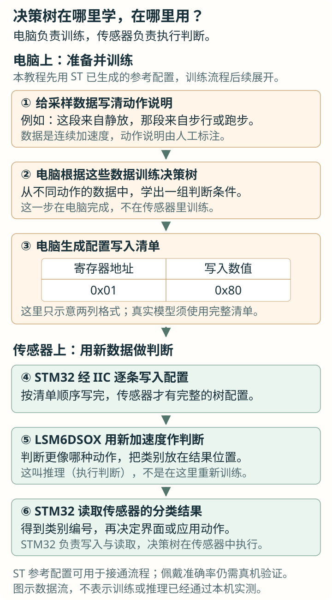
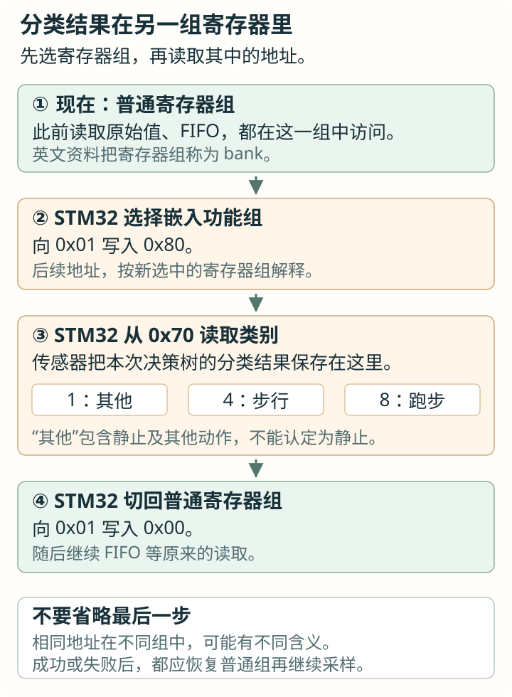

扩展：片内决策树与 AI 训练数据
前面读出的是加速度和角速度。这次让 LSM6DSOX 自己判断“其他、步行、跑步”，再由 STM32 读出类别。先完成一次小实验，再拆开配置写入和结果读取。
第 1 节 · 一串加速度，怎样变成一个判断？
在前篇实验中，手腕动一下，ax、ay、az 都会变化。现在想知道“人正在走路吗”。只看某一时刻的一个数很难回答：静放时可能出现这个值，走路的某一瞬间也可能出现。可以先连续观察一小段，再描述这段数据的变化。
先用四个数，做一个最简单的判断
假设从加速度 X 轴依次取得下面两段数据，单位为 g。对每段各算一次“最大值减最小值”：
| 一段数据 | 计算过程 | 得到的变化范围 |
|---|---|---|
| 0.1、0.2、0.1、0.2 | 0.2 − 0.1 | 0.1 g |
| −0.8、0.8、−0.7、0.9 | 0.9 − (−0.8) | 1.7 g |
现在规定一个条件：变化范围大于 1 g，就归到“变化较大”；否则归到“变化较小”。第一段走向“较小”，第二段走向“较大”。这样，原先四个数就变成了一个判断结果。
刚才一起参与计算的四个数，组成一个数据窗口；算出的变化范围，叫一个特征；用来比较的 1 g，叫阈值。这些名称分别对应刚才做的三个具体动作：取一段、算一个描述、与一个界限比较。
如果一次比较还不能分清动作，就在某个分支继续比较别的特征。把这些条件和分支连接起来，末端给出类别，就形成一棵决策树。（上面的四个数和 1 g 只演示判断方法，不是 ST 参考树的实际条件，也不能据此识别走路或跑步。）
条件由谁确定，判断又由谁执行？
我们可以人为规定条件，也可以给电脑许多已经注明“这段在走路、那段在跑步”的数据，让训练工具寻找能区分它们的特征、阈值和分支。这个寻找过程叫训练；训练完成后保存下来的判断规则，就是这里说的模型。
LSM6DSOX 内部有一块专门执行这类判断的硬件，叫 MLC（Machine Learning Core，机器学习核心）。把训练好的规则写进去，它就能用后来测到的新加速度执行判断，这个过程叫推理。本篇先使用 ST 已经训练好的腕戴活动参考树，自己训练的步骤留到 AI 支线。
第 2 节 · 电脑训练好的树，怎样放进传感器？
前面用 C 的 if 就能表达一次判断。MLC 执行判断时，需要把“算什么特征、与什么值比较、沿哪个分支继续”存进芯片规定的位置。训练工具会把这些规则转换成一份配置写入清单，每项说明一个寄存器地址和要写进去的字节。
STM32 的工作就接回了已经学过的 IIC：按顺序把清单写入 LSM6DSOX。写完后，传感器根据新测量的数据分类；STM32 再通过 IIC 读取分类编号。整件事分布在电脑、STM32、传感器三个地方：

先认清这棵参考树需要什么
这次部署的是 ST 的腕戴活动识别示例。它使用三轴加速度，量程为 ±8 g。树内部每秒处理 26 份数据，累积 52 份形成一个窗口，即 52 ÷ 26＝2 秒。因此它判断的是一段时间内的活动。
当前项目仍以 104 Hz 保存原始六轴数据，MLC 在芯片内部按 26 Hz 处理加速度。这两条通路可以同时工作：FIFO 供 STM32 取得原始记录，MLC 另外产生类别。MLC 的 26 Hz 不要求把前篇的原始采集改成 26 Hz。
类别用一个字节传回。仓库头文件给这些编号取了下面的名字，稍后的程序直接使用它们：
| 程序看到的值 | 头文件中的名字 | 怎样理解 |
|---|---|---|
| 1 | MLC_OTHER | 其他，包含静止及其他非走跑动作；仅凭 1 还分不清具体是哪一种 |
| 4 | MLC_WALKING | 参考树判断为步行或快走 |
| 8 | MLC_RUNNING | 参考树判断为慢跑或跑步 |
| 255 | MLC_UNKNOWN | 驱动表示“本次没有可用分类”，可能还在等待结果，也可能加载或通信失败 |
这棵树只给出粗类别。比如读到 1，还需要结合人工记录，才能知道人是在静放、骑行，还是做了其他动作。
第 3 节 · 先让程序读到一次分类
沿用前篇已经能与 LSM6DSOX 通信的裸机实验工程。这次先单独观察分类值，完成后再接回连续采集。HAL、系统时钟、GPIO 和 I2C1 的初始化仍使用实验工程已有的设置；本次轮询实验无需启用 PB4 外部中断。
① 找到配置和两个现有函数
仓库已经把加载和读取写进驱动。使用下面三个文件即可：LSM6DSOX.c 参加编译，LSM6DSOX.h 提供函数声明和分类名字，mlc/lsm6dsox_wrist_mlc.h 保存完整配置数组。保留模型头文件的 mlc 子目录，驱动已经包含它。
LSM6DSOX_MLC_Init()：没有参数，向已经初始化的传感器加载这棵树。返回 0 表示成功，返回 1 表示失败。LSM6DSOX_MLC_GetResult()：没有参数，读取最近的分类，返回前表中的 1、4、8 或 255。
两个函数各做一件事：前者启动时调用一次，后者在运行中反复读取。下面先用它们接通实验，第 4、5 节再分别拆开它们内部的 IIC 操作。
② 先初始化传感器，再加载树
在 main.c 顶部包含头文件，用 activity 保存最新类别。volatile 让编译器保留对这个变量的更新，方便在调试器中观察；MLC_UNKNOWN 的值为 255，表示开始时还没有分类：
main.c 顶部 · 用户头文件区与全局变量区
#include "LSM6DSOX.h"
#include "i2c.h"
volatile uint8_t activity = MLC_UNKNOWN;在 main() 中，等生成的 MX_I2C1_Init() 已执行，再写下面几行。前篇的 LSM6DSOX_Init(&hi2c1) 完成身份检查和基本配置，返回 0 才继续加载树。用两个变量保留结果，便于知道失败发生在哪一步：
main() 的 USER CODE BEGIN 2 区域 · 启动采集之前
uint8_t init_status = LSM6DSOX_Init(&hi2c1);
uint8_t load_status = 1;
if (init_status == 0) {
load_status = LSM6DSOX_MLC_Init();
}先观察这两个变量：都为 0，才表示基本初始化和加载都成功。若 init_status 非 0，加载函数根本没有执行，load_status 保留初值 1。加载期间会暂停测量并清空 FIFO，所以把它安排在开始连续采集之前。
③ 每隔一会儿读取，观察变量变化
用下面的 while (1) 替换独立实验原有的主循环，本次暂不运行原 FIFO 读取循环。前面的初始化代码仍留在循环外。成功后才调用读取函数，将返回的类别赋给 activity；HAL_Delay(2000) 让主循环等待约 2000 毫秒，也就是两秒。等待发生在主循环中。
分类独立实验的主循环 · 只观察 activity
while (1) {
if (init_status == 0 && load_status == 0) {
activity = LSM6DSOX_MLC_GetResult();
}
HAL_Delay(2000);
}初始化返回的 0 是“操作成功”，读取返回的 4 是“判断为步行”，它们回答的是不同问题。activity 始终为 255 时，先确认两个初始化结果，再检查通信、等待分类。
④ 戴在手腕上，依次静放、步行、跑步
- 在调试器的变量观察窗口加入 activity，让程序继续运行。可以使用支持运行中读取的观察方式，避免反复暂停 MCU。
- 每种动作保持约十秒或更久，记录观察到的编号和动作切换时刻。步行尝试观察 4，跑步尝试观察 8；静放可能归入 1。
- 刚上电可能先读到 255。动作切换后也可能暂时保留旧类别：特征窗口需要收满数据，参考树还会综合连续几次判断，因此“两秒一读”不等于“两秒必定切换”。
这些是待检查的现象，佩戴位置和动作差异都可能影响结果。先确认能读到有效编号，再记录哪些情况判错。
第 4 节 · 拆开读取函数：为什么先选一组寄存器？
已经读到类别后，再看它来自哪里。参考树把分类放在一个叫 MLC0_SRC 的寄存器里，地址为 0x70。但只知道地址还不够：LSM6DSOX 有多组寄存器，读写前要选中对应的一组。
前篇访问原始测量和 FIFO 时，使用的是普通寄存器组（user bank）。MLC 的结果在嵌入功能寄存器组（embedded bank）。英文 bank 在这里就是“一组寄存器”；相同数字的地址，在不同组里可能代表不同内容。
负责选组的是 FUNC_CFG_ACCESS（0x01）。本次向它写 0x80，选择嵌入功能组；写 0x00，回到普通组。因此一次结果读取要按下面的顺序做：

把三个动作和已学过的读写函数对上
回忆前篇：reg_write(reg, value) 往寄存器写一个字节；reg_read(reg, &result) 从寄存器读一个字节，存进 result。它们是 LSM6DSOX.c 内部的函数。先只看通信都成功时的操作：
读取函数内部的成功路径示意 · 在 LSM6DSOX.c 中对照阅读
uint8_t result = 0;
reg_write(0x01, 0x80); /* 选中嵌入功能组 */
reg_read(0x70, &result); /* 取得分类编号 */
reg_write(0x01, 0x00); /* 恢复普通组 */第三行执行后，result 里就是芯片给出的原始编号。最后一行同样必需：下一次读 FIFO 时，程序要重新按普通组解释寄存器地址。选组和恢复应由同一个读取过程完成。
实际的 LSM6DSOX_MLC_GetResult() 还会检查每次读写是否成功，并核对编号。模型未加载、读到刚启动时的 0、读到未定义类别或通信失败，都返回 MLC_UNKNOWN。上面四行只帮助看清动作，应用仍调用已经处理这些情况的现有函数。
回到项目源码时，可以在 LSM6DSOX.c 搜索这个函数，从这三次操作向外读它的判断分支。FIFO 读取和分类读取应依次执行，避免一处还在嵌入功能组中，另一处就开始访问普通组。
第 5 节 · 拆开加载函数：一张表，怎样成为整棵树？
再回头看启动时调用的 LSM6DSOX_MLC_Init()。第 2 节提到的配置清单，在仓库里已经转换成 C 数组，保存在模型头文件中。它的开头是这样的：
lsm6dsox_wrist_mlc 数组开头节选 · 每行是 {寄存器地址, 写入值}
static const uint8_t lsm6dsox_wrist_mlc[][2] = {
{0x10, 0x00},
{0x11, 0x00},
{0x01, 0x80},
/* 后面继续保存完整配置。 */
};[][2] 表示每行有两个字节。第一行要求向 0x10 写 0x00，先停止加速度测量；第二行停止陀螺仪；第三行选择嵌入功能寄存器组。这些都还是之前学过的寄存器写入。后面的各项继续写入特征、树的判断条件和运行设置，最后启用分类。
第 i 行的 lsm6dsox_wrist_mlc[i][0] 是地址，lsm6dsox_wrist_mlc[i][1] 是写入值。加载函数按顺序取出这两个字节，再完成相应的 IIC 写入。完整表共有 461 项，具体数值由工具根据模型生成。这里只展示开头帮助认识格式，实验使用仓库的完整数组。
把整个加载过程分成三段来看
- 准备：确认基本初始化已成功，暂停测量并清空旧 FIFO 数据，准备写入。
- 装入：按清单顺序写入模型的全部设置，再开启 MLC。
- 恢复原始采集：把项目原有的加速度、陀螺仪恢复为 104 Hz，重新开启 FIFO 连续模式。MLC 仍按模型要求以 26 Hz 工作。
参考配置还包含“分类变化时从 INT1 通知”的设置。项目的 INT1 已经用来通知 FIFO 水位，所以当前加载函数关闭参考树的这条通知，改由 STM32 主动读分类。这样，PB4 收到的仍是前篇讲过的 FIFO 通知。
继续拆开：清单为什么会反复向 0x09 写不同的值？
一整棵树有许多配置字节，需要放进片内的一片配置存储区。芯片把它分成页，每页里再按位置保存字节。写入前要告诉芯片“选哪一页、从页内哪里开始”；随后通过一个固定的写入入口连续送入数据。
选中嵌入功能寄存器组后，实际表中紧接着出现下面的操作。所有数值均为十六进制：
| 地址 ← 数值 | 这一步做什么 |
|---|---|
| 0x17 ← 0x40 | 开启配置存储区的页写入 |
| 0x02 ← 0x11 | 选择第 1 页 |
| 0x08 ← 0xEA | 指定从这一页的 0xEA 位置开始写 |
| 0x09 ← 0xB4 | 通过写入入口，向当前位置 0xEA 存入字节 0xB4 |
| 0x09 ← 0x03 | 入口地址仍是 0x09，存放位置已自动前进到 0xEB，写入字节 0x03 |
这个入口叫 PAGE_VALUE。每写一次，芯片内部的存放位置自动前进，所以重复写 0x09 是在依次装入模型的不同字节。清单中的顺序必须保留；后面还会继续选择位置、写入其他字节，再关闭页写入。
这里的“页内位置”属于芯片内部配置存储区。IIC 依然访问同一颗器件，STM32 仍向 8 位寄存器地址写数据。先选寄存器组，再通过这组里的入口访问配置存储区，是两层不同的选择。
对照完整源码：现在再看加载函数里的其他分支
打开 LSM6DSOX.c，搜索 LSM6DSOX_MLC_Init。先找到按表写入的 for 循环，再对照三个具体问题：
- 为什么记录当前 bank？加载清单自己会切换寄存器组，程序要据此识别当前操作的是哪个寄存器。例如普通组的 0x09 控制 FIFO，嵌入功能组的 0x09 则是刚才的页写入入口。
- 为什么页数据失败后直接停止？写入入口会自动前进。若芯片已经接收字节、总线随后报错，重试同一个字节可能把后面的内容错位。现有加载器会终止这次上传。
- 为什么有统一清理分支？中途失败时，程序尝试关闭页写入、关闭未装完整的模型并恢复普通组，再向调用者报告失败。
这时再看 bank 变量、goto 清理和各处返回值，就能把它们对应到实际问题。源文件保留完整实现，正文的小片段用于逐项理解。配置写入失败后先排除通信问题，再从基本初始化开始；传感器重新初始化后，也要重新加载树。
第 6 节 · 这份分类，怎样帮助整理 AI 训练数据？
现在已有两份可以读取的东西：FIFO 中的连续六轴数据，以及 MLC 给出的粗类别。假设准备采集一段步行数据，用它训练 STM32 上的活动识别模型。训练工具需要知道输入数据中人实际做了什么，这个动作说明就叫标签。
最直接的做法是事先记录：第 10 秒开始走路，第 30 秒停下。这样，连续数据中对应的一段就有了人工动作记录。MLC 则可以在旁边再提供一列“它判断成什么”，帮助检查这段数据：
| 记录的时间段 | 人工记录的实际动作 | 同期观察到的 MLC 结果 | 接下来做什么 |
|---|---|---|---|
| 10～20 秒 | 持续步行 | 4 / WALKING | 两份记录一致，继续检查原始数据是否完整 |
| 20～30 秒 | 持续步行 | 8 / RUNNING | 找出这段重新检查：佩戴有变化吗，动作记录或时间对应有误吗，还是参考树判错了 |
| 30 秒附近 | 从步行变为静止 | 可能暂时还是 4 | 单独标记动作过渡，等待分类更新 |
上表是记录方法示例，数值不是本机实测。MLC 的一个计算窗口长 2 秒，还可能等待连续几次判断；某次读取的时间，不能直接当作动作开始或结束的时间。
用它做三件具体的事
- 快速找到待查看的片段。长记录里出现连续的 WALKING，可以从相应时间段开始检查，再由人工确认能否标成步行。
- 优先检查意见不同的片段。人明明在走，MLC 却报跑步，这段值得保留并复核；它能帮助发现参考树容易混淆的动作，也能提醒下一次补采。
- 给后来训练的模型做比较。拿一份单独保留的测试记录，以人工确认的动作作依据，分别检查参考树和新模型的走、跑判断。这样才能知道新模型在哪些地方变好了。
人工标签和机器预测分别保存。若人记录的是骑行，MLC 给出 OTHER，就继续保留“骑行”这个具体标签。若人工尚未确认，只能先保留机器提供的候选判断。
把实验接回项目
仓库的 main.c 在启动时加载树，在运行中每隔约两秒读取一次，将类别保存在 g_mlc_activity。原始 IMU 和 PPG 的批量读取继续按前篇流程执行。等学到 RTOS 后，再回看 Sensor_Task 如何安排这些调用。
当前代码尚未把 g_mlc_activity 连同原始数据导出为训练记录。要做采集工具，可以在原有数据旁增加“读取时间、MLC 结果、人工动作”三项，并保留动作变化的时间说明。当前接口提供类别，没有提供判断正确的概率。
练习：按“静放 → 步行 → 停下 → 跑步”的顺序做一次实验，分别记下动作切换时刻和读取的编号。找一个输出较晚或判断不同的片段，用 2 秒窗口和实际动作记录解释它。随后到 AI 数据与训练支线继续学习怎样整理数据、训练和评估；项目的 proto 后训练则更新 STM32 上的类别原型，具体方法在那里展开。
手册、模型与项目源码
- ST LSM6DSOX DS12814 Rev.4：§2.4 介绍 MLC；FUNC_CFG_ACCESS、PAGE_VALUE、MLC0_SRC 对应本篇的选组、配置写入与结果读取。
- ST AN5259：特征、决策树、窗口与输入处理率。
- 固定版本的官方腕戴参考树；官方训练教程。
- 项目模型说明包含来源、完整配置的许可和适配条件；LSM6DSOX.c包含现有加载与读取函数。